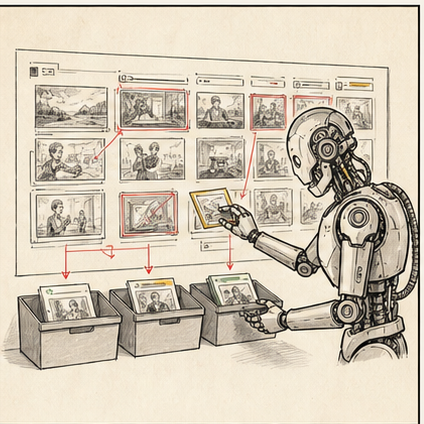

spoken package
Source Map, spoken script, intro hook, подкастовый фрагмент, prompt для Suno и audio gate.
Сначала собираем spoken script и музыкальную подложку. Затем строим редакторский пульт: сигналы, риски, сетка, задачи и обновления hub.

Source Map, spoken script, intro hook, подкастовый фрагмент, prompt для Suno и audio gate.
Сигналы, источники, риски, важность для аудитории и вопросы редактору.
Темы раскладываются по каналам, форматам, владельцам, дедлайнам и human gates.
Удачные prompts, плохие outputs, правки и повторяющиеся ошибки становятся обновлением hub.
Редактор оставляет за собой источник доверия, важность темы, риск, выпуск, запрет на публикацию и обновление правил. Если отдать это машине, получится не ускорение, а автоматизированный шум. Ну да, красиво, но бесполезно. Мы же не за этим собрались.
Сделай spoken script по материалу.
Вход:
- Source Map или исходный текст.
- Канал: эфир / Telegram audio / podcast fragment / voiceover.
- Длина: 60-90 секунд.
- Голос: спокойно, ясно, без рекламного пафоса.
Сделай:
1. Главный смысл.
2. Факты, которые нельзя менять.
3. Intro hook.
4. Spoken script.
5. Места, где ведущему лучше говорить своими словами.
6. Pronunciation notes: имена, география, числа.
7. Audio gate перед записью.
Правила:
- не добавляй новых фактов;
- не подменяй смысл эмоциями;
- пиши так, чтобы это можно было произнести вслух.Instrumental only. No vocals. No lyrics.
Create a professional TV editorial music bed for a spoken news or explainer segment.
Purpose: support narration, not compete with it.
Mood: restrained, modern, focused, credible.
Tempo: medium, around 100 BPM.
Hook: subtle repeating rhythmic pulse.
Structure: quiet intro, steady main section, light development, clean ending.
Instrumentation: soft electronic drums, controlled bass pulse, minimal synth motif, light atmospheric texture.
Mix: voice-first, no harsh highs, no huge lows, no dramatic peaks, no distracting melody.
Avoid: epic trailer, pop song, sentimentality, comedy, aggressive percussion, orchestral excess.Source Map, spoken rewrite, intro hook, подкастовый фрагмент и пометки для ведущего.
Музыкальная подложка, настроение, ритмический хук и быстрые варианты под сюжет.
Озвучка и дубляж как отдельный слой с этической проверкой и редакторским контролем.
Чистка голоса, выравнивание и быстрый технический cleanup перед монтажом.
фактынет новых фактов, цифр, оценок и причинно-следственных связей без source
произносимостьведущий может прочитать текст вслух без канцелярита и спотыканий
именаударения, география, должности и названия проверены человеком
музыкаподложка поддерживает голос, а не делает из новости трейлер к катастрофе
этикаvoice tools и дубляж используются только там, где это разрешено и уместно
Контур соединяет мониторинг, source map, digest, content grid, task package, human gate, публикацию, разбор результата и update hub.

monitoringсобираем сигналы: темы, источники, повторы, вопросы аудитории
source mapотделяем факт от предположения, цитату от пересказа, риск от идеи
digestгруппируем сигналы в понятную картину недели или дня
gridраскладываем решения по каналам, форматам, owners и дедлайнам
updateпосле выпуска обновляем prompt, gate, пример или запрет в hub
Ищет источники, unknowns, риски и вопросы перед публикацией.
Разделяет "можно утверждать" и "хочется красиво сказать".
Держит голос продукта, рубрики или канала через evidence и decision trace.
Из одного проверенного source делает сайт, Telegram, видео, карточки и аудио.
Транскрипт, spoken script, intro hook и audio QA.
Сохраняет удачные и плохие outputs как обновление системы.
Собери редакционный digest из сигналов ниже.
Не пиши публикацию. Не придумывай факты.
Для каждого сигнала укажи:
1. тема;
2. источник и уровень доверия;
3. что подтверждено;
4. что не подтверждено;
5. почему это важно аудитории;
6. возможный формат: сайт / Telegram / видео / визуал / аудио;
7. риск: факт, контекст, юридический, репутационный;
8. что должен решить редактор;
9. next step и owner.
После таблицы дай:
- top-5 тем недели;
- что нельзя выпускать без проверки;
- какие материалы можно собрать быстро;
- какие вопросы вынести редактору.Что нельзя публиковать, какие источники сильные, где нужен человек.
Style Graph, anti-style, примеры хороших и плохих формулировок.
Digest, content grid, task package, update proposal, gates.
Что уже пробовали, что сломалось, что стало правилом.
В браузере редактор получает быстрый результат. В Claude Code / Codex owner ведет систему: файлы, prompts, gates, examples, changelog. Если сразу тащить всех в агентный режим, половина людей начнет воевать с интерфейсом вместо редакционной задачи. Красиво? Нет. Зато правда.
быстрый digest, source map, content grid
постоянные правила, голос, шаблоны, knowledge
папка hub, skills, outputs, changelog, обновления
Daily digest. Сигналы дня, источники, риски, что выпускать, что нельзя выпускать.
Content grid. Канал, формат, owner, дедлайн, source, human gate.
Task package. Что получает корреспондент, SMM, монтажер, дизайнер или ведущий.
Update proposal. Что меняем в prompt, skill, gate или template после реального output.
На основе digest собери content grid на неделю.
Для каждой темы укажи:
1. приоритет: high / medium / low;
2. формат: сайт / Telegram / видео / визуал / аудио;
3. зачем аудитории;
4. source, на который можно опереться;
5. что нужно проверить;
6. owner;
7. дедлайн;
8. human gate;
9. что можно переиспользовать в других каналах.
После сетки дай редакторское решение:
- keep;
- revise;
- kill;
- automate later.
Не превращай сетку в автопубликацию. Финальное решение принимает редактор.Сделай update proposal для AI-hub.
Дано:
- source;
- prompt или skill;
- output;
- правки редактора;
- что сработало;
- что сломалось.
Собери:
1. Какой workflow / skill обновляем.
2. Evidence: 3-5 конкретных наблюдений.
3. Decision: keep / revise / kill / automate later.
4. Что добавить в hub: prompt, gate, example, warning.
5. Owner.
6. Как проверить, что обновление помогло.
Правило:
не обновляем систему по одному восторгу. Нужен evidence.Берем принцип: не список команд, а маршрут от входа до результата.
Берем идею: skills передают output друг другу, как производственная цепочка.
Берем боль: если source of truth живет отдельно от AI, редактор тонет в ручном sync.
Берем не "детектор", а список повторяющихся машинных дефектов для редакторского gate.
Открыть Claude / ChatGPT в браузере и вставить 8-12 сигналов.
Собрать digest: источники, риски, важность, вопросы редактору.
Разложить top-5 в content grid: канал, формат, owner, gate.
Показать project/cowork: где живут правила, prompts, gates и update proposal.
Base. Собрать digest из 8-12 сигналов: источники, риски, важность, что проверить.
Opti. Из digest собрать content grid на неделю: канал, формат, owner, дедлайн, gate.
Advanced. Сделать project/cowork или агентную папку с prompts, gates, examples и update proposal.
В hub. Сохранить один хороший digest, один спорный output и одно предложение по обновлению правила.